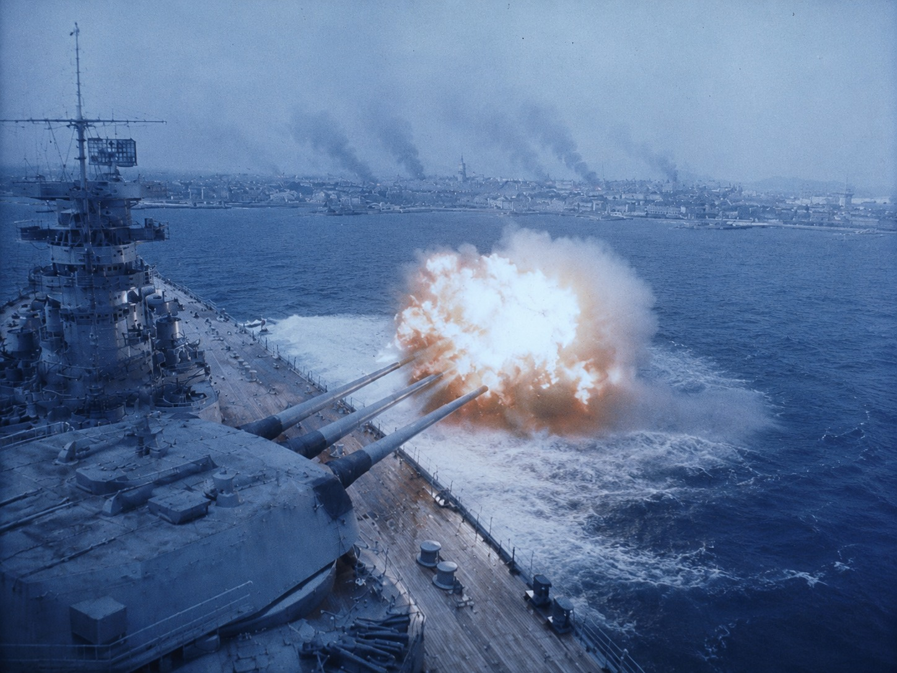

Imperial Eye
Earth map data: Natural Earth coastlines, lakes, rivers and glaciers (public domain); NOAA ETOPO1 relief, Amante & Eakins 2009 (public domain); Köppen-Geiger climate 1901–1930 by Beck et al. (2023), Scientific Data 10, 724, licensed CC BY 4.0 — all reduced to the hex grid.
Music:
'Age of Wonder' by Scott Buckley - released under CC-BY 4.0. www.scottbuckley.com.au
'Vanguard' by Scott Buckley - released under CC-BY 4.0. www.scottbuckley.com.au
'The Climb' by Scott Buckley - released under CC-BY 4.0. www.scottbuckley.com.au
'Legionnaire (Original)' by Scott Buckley - released under CC-BY 4.0. www.scottbuckley.com.au
'Absolution' by Scott Buckley - released under CC-BY 4.0. www.scottbuckley.com.au
In-game cues are excerpts of these recordings, cut and crossfaded for the game.